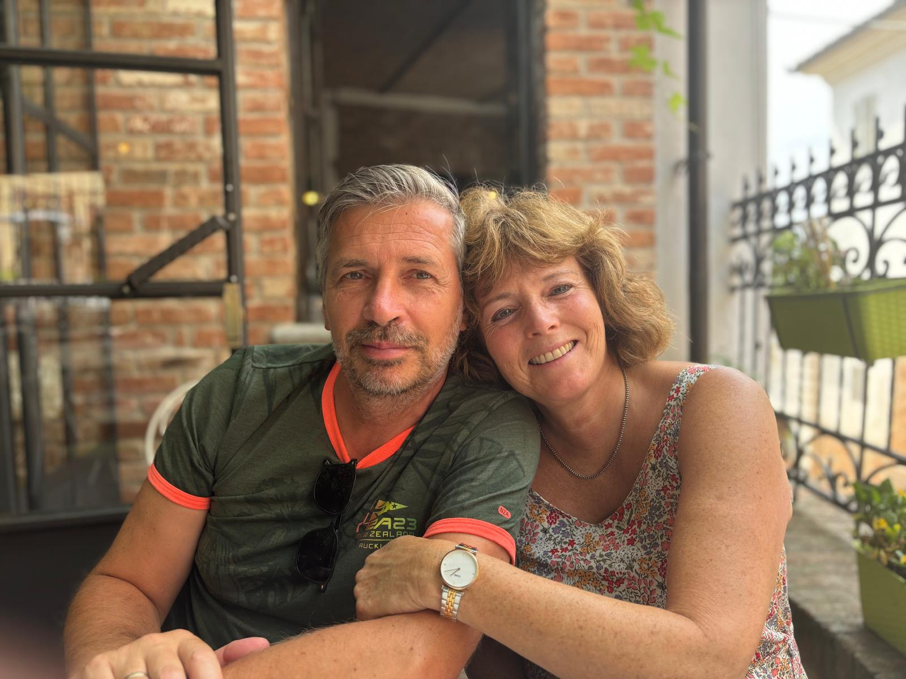

Casa Modero is a three-bedroom Bed & Breakfast located in Cartosio. Based in the beautiful valley of the Erro, a place lodged between the best vineyards of Piedmont in the north and many regional nature parks at the coast in the south. Casa Modero is the ideal place to rest between activities such as trying out the local wines and dishes, going for a swim in the Erro, a day trip to the Ligurian coast or sightseeing the old sulfur springs in Acqui Terme.
Casa Modero offers its accomodation with three bedrooms, each adorned with its private bathroom. The house has a shared living and dining room and multiple places to rest and eat outside of the house. For example the patio which can be shaded or the front of the house with its enchanting view over the valley. Discover a perfect blend of private comfort and communal charm at Casa Modero.
Breakfast is included in your stay. Start your morning here with a choice of tea or coffee combined with fresh orange juice. Enjoy a delicious breakfast with local products and produce from our own garden.
Open from the 1st of May till the 30th of September
Check In: 15:00 - 24:00
Check Out: Before 10:00
Double bed
Breakfast included
Bed linen and towels included
Private adjacent bathroom
WiFi
Heating
Pets allowed
"Olivo" is the biggest room in the house with an adjacent private bathroom. The soft green tone of the room and the windows faced towards the forest will make you feel like you are immeresed in nature when spending the night in this room.
The room "Melanza" offers a more antique interior with an adjacent private bathroom. Its colours make it ideal for a romantic getaway.
The last room that is avaliable to book is the room "Cavalo". Located in the older parts of the house, this room has also an adjecent bathroom. The thick outside walls of the room make it the perfect place to cool down in summer after a joyful day.
Prices at Casa Modero are vary between 70 and 80 euros and depend on the season number of nights and number of nights. Please contact us for more information and to book your stay.
As is in the name, this city is known for its natural thermal waters and spas. At piazza Bollente the most known thermal spring can be found and this is also the perfect place to grab a bite and drink a Spritz. With impressive ruins of the roman aqueduct still standing next to the Bormida river and being known for its surrounding vineyards, its landscapes were assigned in 2014 as a UNESCO World Heritage Site.
Close to Acqui Terme lies the Monferrato region that is known for its picturesque vineyards that produce wines of excellence quality. Here is is possible to learn how wine is produced, discover the perfect gastronomic combination of food and wine and take a tour of the vineyards and historical cellars.
Casa Modero is surrounded by the beautiful hills, valleys and dense forests of the Langhe area making it a great place for many day hikes. For the more experienced hikers, the E1 European long distance trail is close by and there are many other long distance trails located in the regional parks on the Piedmonte/Ligueria border.
There are many places around Casa Modero to cool off on a hot day. Walking distance from the property lies the river the Erro which stays cool all summer. If you rather swim in a swimming pool, we are located close to the public swimming pool of Cartosio. Liguerian coast is also just 50 minutes away from Casa Modero, making it the perfect place for a day trip to the beach.
The area around Casa Modero is also ideal for cycling enthusiasts. With its hilly terrain and scenic routes, it offers a great opportunity to explore the beautiful landscapes of the region. Whether you prefer road cycling or mountain biking, there are plenty of trails and routes to choose from. In collaboration with Piedmonte Cycling we are offering different types of bikes for rent.
Wij werken ook samen met Piedmonte Golf, waarbij verschillende golfarrangementen beschikbaar zijn voor een golf-ervaring in de regio. Kijk vooral op de website van Piedmonte Golf voor meer informatie over welke arrangementen beschikbaar zijn.
Voor diegenen die geïnteresseerd zijn in het leren van de Italiaanse taal, bieden wij in samenwerking met Villa Due Mondi ook taalcursussen aan. Deze cursussen zijn ontworpen om je te helpen de Italiaanse taal te leren en te verbeteren terwijl je kan genieten van een prachtige omgeving.
We are Loris and Silvia Barbieri, who are enthusiastically taking a new step by opening our Bed & Breakfast. With a focus on comfort, quality, and a personal approach, we warmly welcome our guests. For us, our B&B is a place where peace, hospitality, and attention to detail are central. We strive to offer every guest a pleasant and carefree stay. We look forward to welcoming you and making your stay as pleasant as possible.

- Our rooms are really clean and we like to keep it that way, so please keep all the outside and inside areas clean and tidy.
- Smoking is strictly forbidden inside of the house and outside on the property of the house.
- It is strictly forbidden to light fires, candles or incense inside the rooms or in the shared spaces of the house.
- It is only allowed to throw toilet paper in the toilet, for other objects a bin can be found in the bathroom.
- Between 23:30 pm and 08:00 am, all loud noises and any sort of disturbances are to be avoided. During the rest of the day, an adequate behavior should be kept as a form of respect to all of the guests.
- It is not allowed to organize parties or events in the facility without permission from the host.
- At the end of each stay, the room and the B&B main entrance keys have to be returned. If lost or misplaced, a penalty fee of Euro 50,00 per lost key will be charged.
- Any damages caused to the B&B's property and/or damages caused by improper use of the furnished equipment, will have to be paid for.
CIN: IT006036C1H3XDMF3J
CIR: 00603600010
Contact us on Whatsapp: Click here to see number
Email: Click here to see email